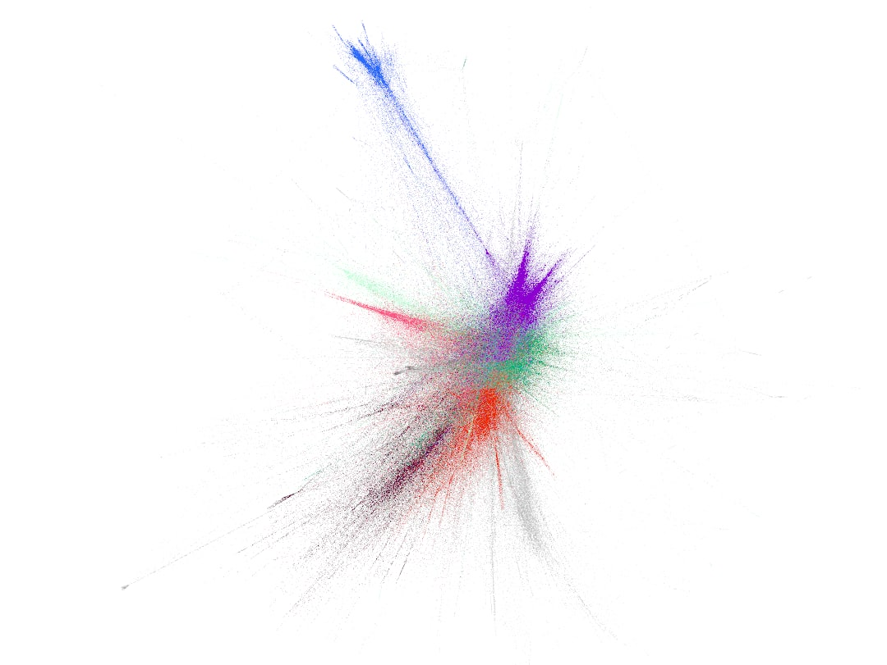
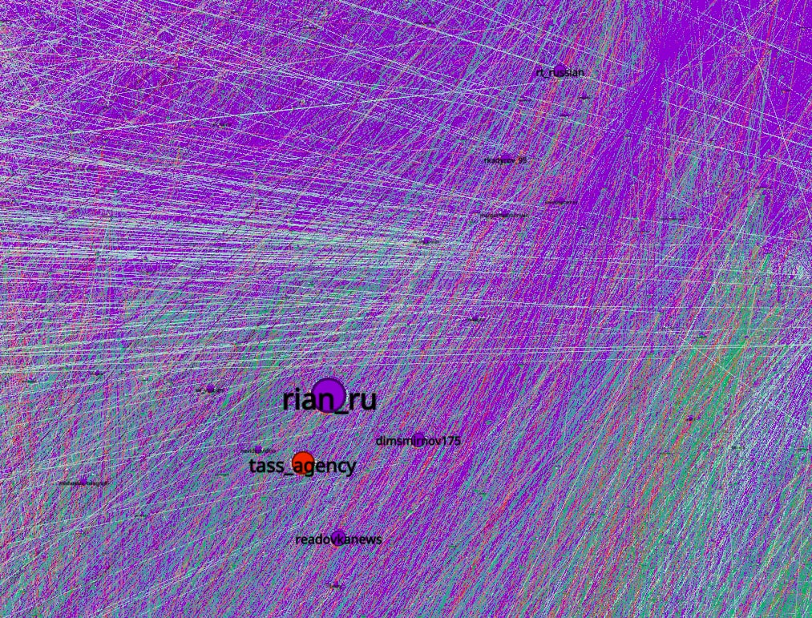
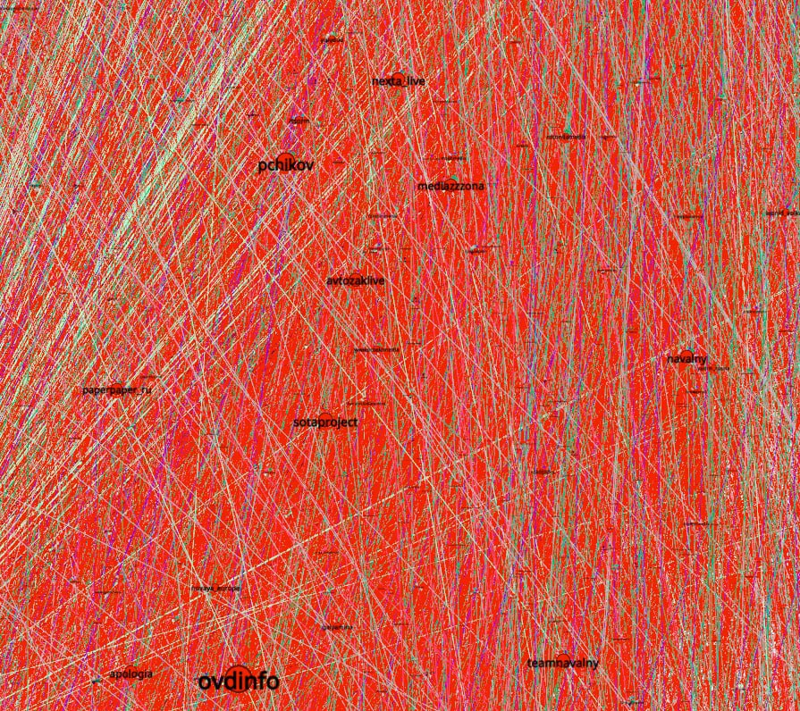
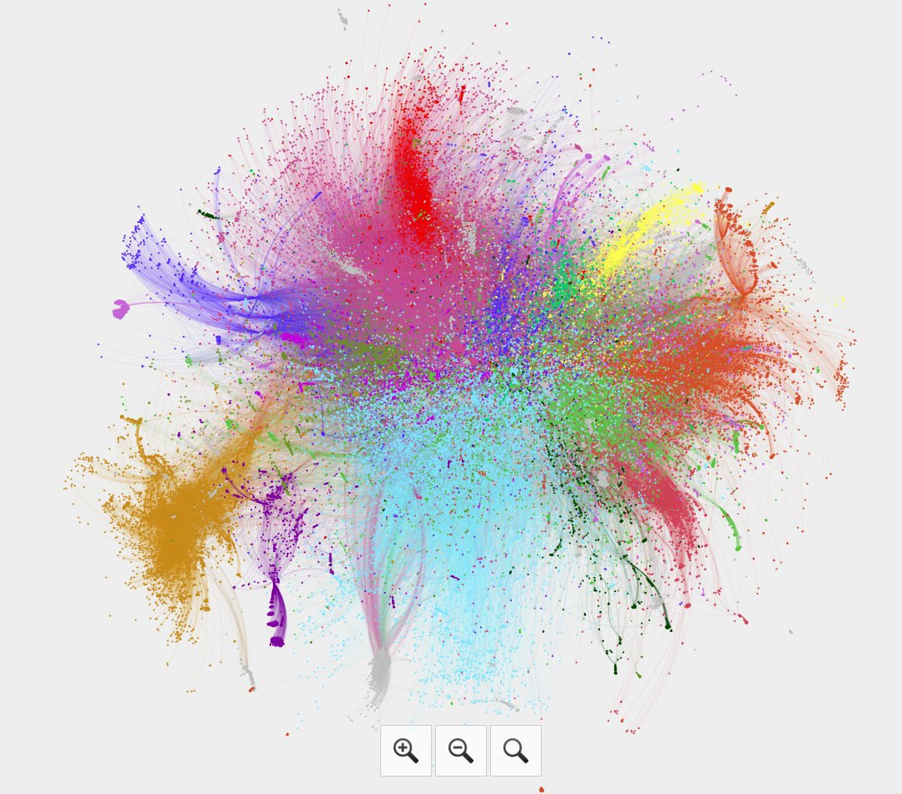

I've found this project and this scraper. So I decided to make my own crawler to get a graph of the telegram channels and dig it where I want to.
I started with my channel, so I expected to find some communities around math, ML, DS and CS, and other tech channels. But after just a few steps of crawling, I've found tons of Russian news channels. Both sides: governmental pro-President media and independent, which automatically mean oppositional in most cases.
  Tg post here
The purple region on the top is pro-President channels and official media, and red -- the opposite. That small blue cluster weakly connected with the main cloud consists of channels written in English. As far as I can see they are about USA and Australia.
At the same stage, I've found dense networks of news channels for Russian regions. They look extra dense and unnatural.
Tg post here
This is how it's looked like when there was 60K nodes
At this stage, I've found tons of propaganda channels. All the kinds. News, "experts", analytics, aggregators, and so on. I've started to think that their main aim not to provide a consistent picture of the world, but to surround a reader with a tons of posts. They don't need to be consistent. They only need to block all other information. Another thing I've noticed is that pro-President channel unlikely to even mention some points from oppositional channels. Even when criticise something that is not pro-President, they criticise not a real point, but fictional and attributed to opponent. So there is no way one can get an idea about other points of view from propaganda, but one always knows what propaganda says even from it's opponents. In the form of criticism or as cites, when ridiculed or in any other way everybody knows what Cremlin whant to say.
At this point I think that propaganda don't need to make everybody beleive in what it says. It's only enough to make everybody think, that others beleive.